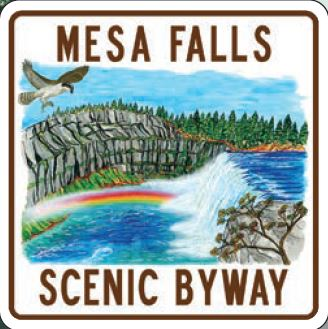

The Mesa Falls Scenic Byway begins at the junction of U.S. 20 and
Idaho 47, near the northern terminus of the Teton Scenic Byway in
Ashton, Idaho.
From Ashton, the route travels through the
Warm River area towards its main attractions, Upper and Lower Mesa
Falls. At 114 feet and 65 feet respectively, the Upper and Lower
Falls offer equally spectacular views in a beautiful forest setting.
Both falls can be viewed in full, Lower Falls from a quarter mile
distance, Upper Falls from just a few feet away. The area near
Upper Falls is enhanced with pathways, stairs and viewing
platforms. These improvements lead visitors to the brink of the
falls, close enough to feel the power of the cascading water. Some
of the pathways and viewing platforms are universally accessible.
The historic Big Falls Inn (fee site) at Upper Falls has been restored
to its original splendor and it is now open seasonally (approximately
May 15th thru October 1st) as an interpretive center. Though the
byway is less than an hour's driving time, viewing the falls, touring
the interpretive center, enjoying a picnic lunch and making stops
to view wildflowers can easily fill half a day.